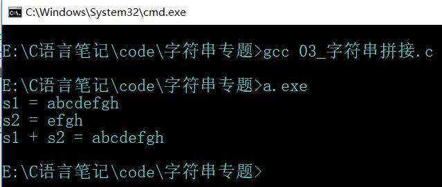

字符串操作函数的实现----字符串拼接
1 #include <stdio.h>
2
3 // 求字符串长度
4 int getLength(char *str) {
5
6 int len;
7 for (len = 0; str[len]!= '\0'; len++);
8
9 return len;
10 }
11
12
13 // 字符串拼接函数实现, 将str2拼接到str1后
14 char *myStrcat(char *str1, char *str2) {
15 int len = getLength(str1); // 字符串str1的长度
16 int i, j;
17
18 for (i = len, j = 0; str2[j] != '\0'; i++, j++) {
19 str1[i] = str2[j];
20 }
21
22 str1[i] = '\0'; // 手动添加字符串结束标志
23
24 return str1;
25 }
26
27 int main() {
28
29 char s1[100]="abcd";
30 char s2[40]="efgh";
31 char *p = s1;
32
33 p = myStrcat(s1, s2); // 数组名是常量, 不可以做左值
34
35 printf("s1 = %s\n", s1);
36 printf("s2 = %s\n", s2);
37 printf("s1 + s2 = %s\n", p);
38
39 return 0;
40 }运行结果:

注意事项:
0° main函数中的测试字符串s1不能定义成char *s1 = "abcd"的形式, 这种定义方式只是声明一个char型的指针变量指向字符串 "abcd", 而并没有开辟内存空间, 不能进行拼接.
1° 在myStrcat函数中拼接动作完成后需要手动添加一个字符串结束标志'\0'.
2° 字符数组s1的容量要足够大, 容量至少应是两字符串实际长度的和.
思考(仅仅个人观点):
曾尝试过在myStrcat()函数中事先判断字符串s1的容量, 但考虑到字符数组做函数参数时会退化成指针, 用getLength()函数获取长度只能得到它的实际有效长度而无法获取字符数组的容量.
也就是说在主函数中定义的s1[100], 将s1作为参数传进去, 就退化为指针了, 所以你无论是借助sizeof还是strlen都无法得知它的容量.